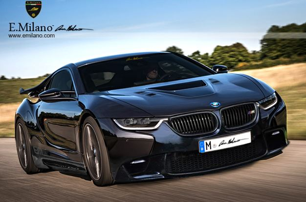
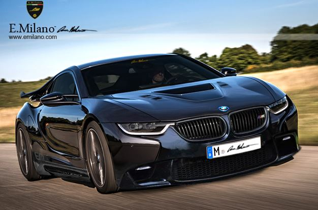
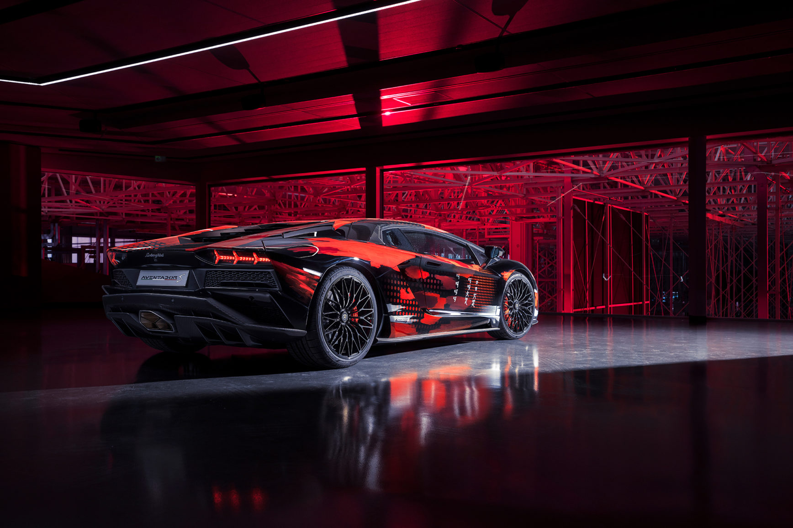
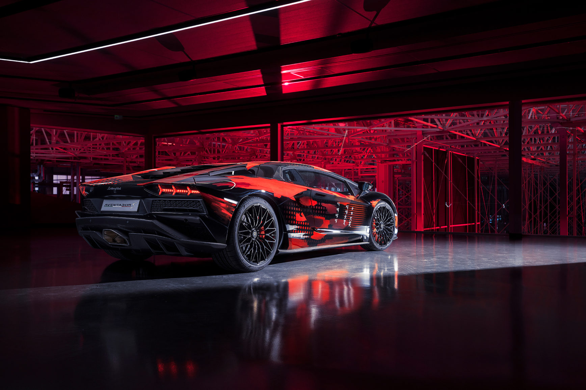

 

Porsche
h.c. F. Porsche AG, usually shortened to Porsche AG
is a German automobile manufacturer specializing in high-performance sports cars,
SUVs and sedans. The headquarters of Porsche AG is in Stuttgart, and the company is
by Volkswagen AG , a controlling stake of which is owned by Porsche Automobil Holding SE.
Porsche's current lineup includes the 718 Boxster/Cayman, 911, Panamera, Macan,
Cayenne and Taycan.
BMW
Bayerische Motoren Werke AGcommonly referred to as BMW
is a German multinational corporation which produces luxury vehicles and motorcycles. The company was founded
in 1916 as a manufacturer of aircraft engines , which it produced from 1917
until 1918 and again from 1933 to 1945.
Automobiles are marketed under the brands Mini and Rolls-Royce, and motorcycles are marketed under the brand BMW Motorrad.
Mercedes-Benz
(German: [mɛɐ̯ˈtseːdəsˌbɛnts, -dɛs-]), commonly referred to as Mercedes, is both a
German automotive brand and, from late 2019 onwards, a subsidiary – as Mercedes-Benz AG – of Daimler AG.
Mercedes-Benz is known for producing luxury vehicles and commercial vehicles. headquarters is in
Stuttgart, Baden-Württemberg. The name first appeared in 1926 as Daimler-Benz. In 2018, Mercedes-Benz
was the largest seller of premium vehicles in the world, having sold 2.31 million passenger cars.
Lamborghini
Lamborghini S.p.A. (Italian pronunciation: [lamborˈɡiːni]) is an Italian brand and manufacturer
of luxury sports cars and SUVs based in Sant'Agata Bolognese. company is owned by the Volkswagen Group
through its subsidiary Audi.
Ferruccio Lamborghini, an Italian manufacturing magnate, founded Automobili Ferruccio Lamborghini S.p.A.
in 1963 to compete with established marques, including Ferrari. The company was noted for using a rear
mid-engine, rear-wheel drive layout. Lamborghini grew rapidly during its first decade, but sales
plunged in the wake of the 1973 worldwide financial downturn and the oil crisis. The firm's ownership
changed three times after 1973, including a bankruptcy in 1978. American Chrysler Corporation took
control of Lamborghini in 1987 and sold it to Malaysian investment group Mycom Setdco and Indonesian
group V'Power Corporation in 1994. In 1998, Mycom Setdco and V'Power sold Lamborghini to the Volkswagen
Group where it was placed under the control of the group's Audi division.
Lamborghini currently produces the V12-powered Aventador and the V10-powered Huracán, along with
the Urus SUV powered by a twin-turbo V8 engine. In addition, the company produces V12 engines for
offshore powerboat racing. Lamborghini Trattori, founded in 1948 by Ferruccio Lamborghini, is
headquartered in Pieve di Cento, Italy and continues to produce tractors.